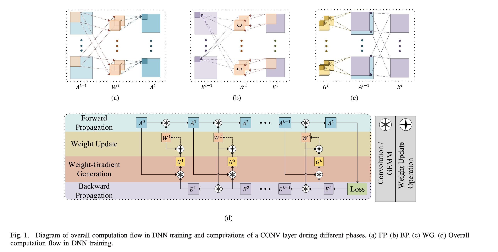
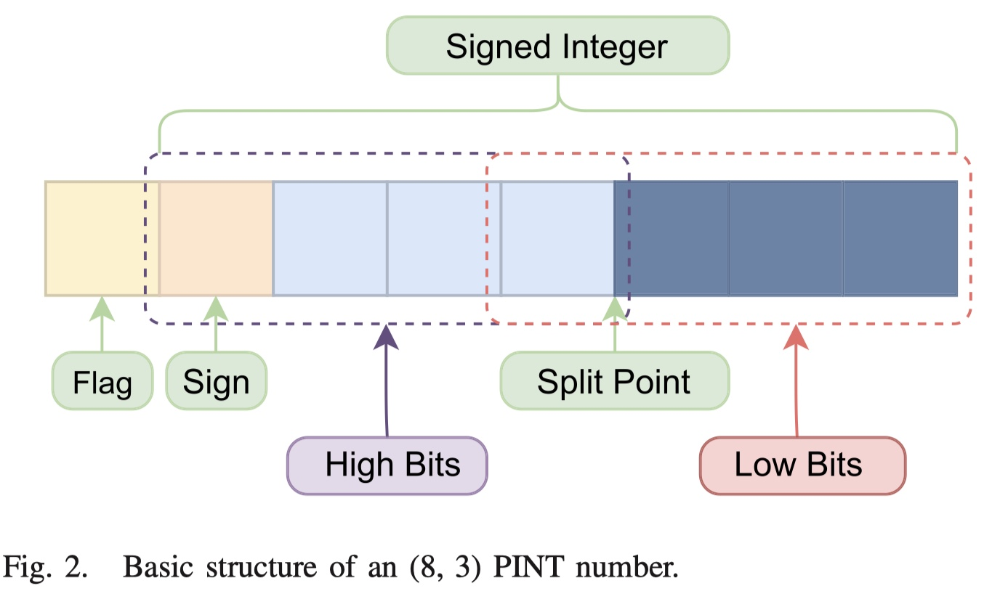
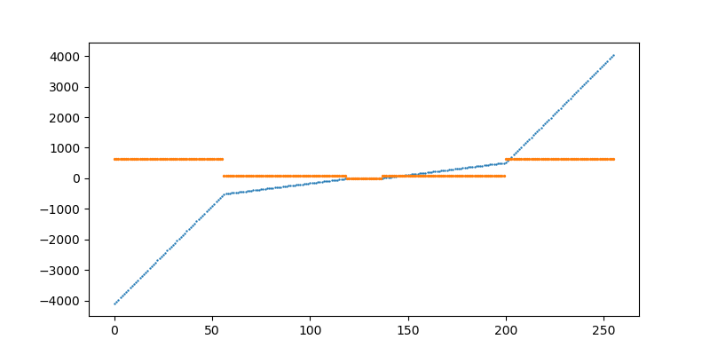
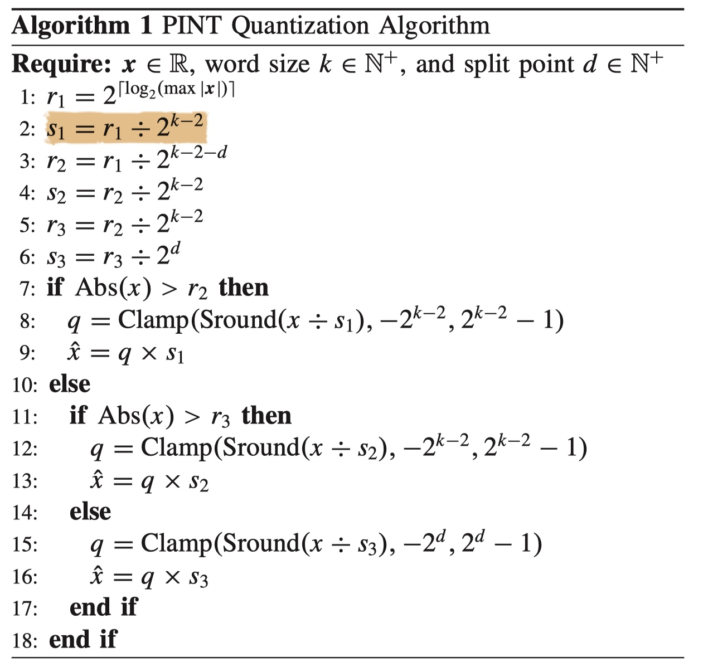
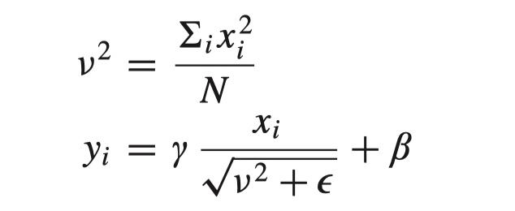
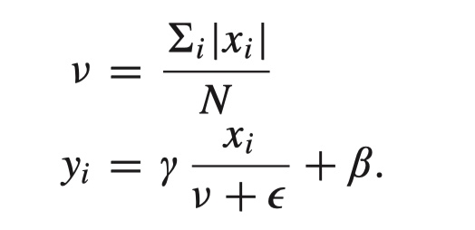
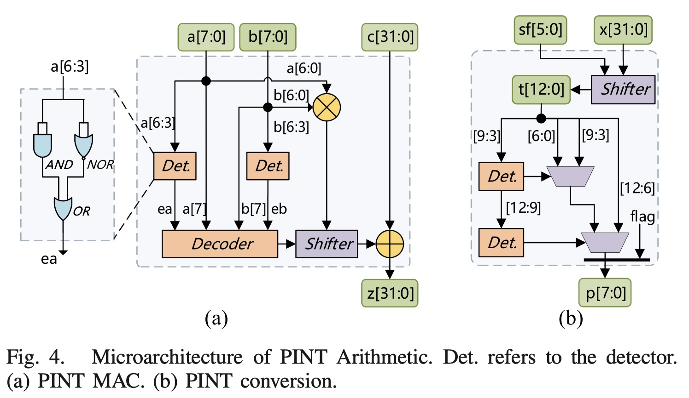

本文提出一种软硬结合的训练解决方案（ETA），通过使用低位宽表示和计算，来加速神经网络的训练过程
主要问题
- 低位宽的表示虽然可以加速运算的过程，但是低位宽训练会导致正确率的下降，后者低位宽的训练通常需要精细的各种trick，是的训练算法很难通用。
- BN层在硬件上很难处理。首先BN在训练过程中是不能与前一层相接的CONV算法融合的（但是在inference时一般是可以的），BN层在训练过程中可以加速收敛。为了保证BN的效果，一般需要加大的batch size，其次，BN层中的某些运算，比如square,sqrt,division等是非常硬件不友好的，容易增加训练的不稳定性。所以之前很多工作都保持BN的运算为高位宽的浮点运算。
- 对于卷积层来说，并不一定映射为卷积运算，比如在之前的工作中，就有把stride为2的卷积层当作池化操作来实现，从而能提升运算的效率。
本文的主要贡献
- 提出了8bit表示类型piecewise integer (PINT)，并设计了专用的运算单元；此外，文中设计了一种normlize层 L1-norm filter response normalization（L1-FRN），来替换之前的BN层，从而去掉了L2-norm相关的运算。算子替换后，accuracy与浮点训练结果相当。
- 可重构的PE阵列的设计，可支持多种计算模式。比如主要问题中提到的stride为2的CONV
- 设计了辅助core用于处理特殊运算，比如L1-FRN,threshold linear unit(TLU), WU（权重更新）
- 工作采用了Xilinx VC709平台实现，吞吐量是811.25 GOPS；能效是93.86 GOPS/W
背景介绍
神经网络训练
训练过程可以拆解为4个步骤，FP, BP, WG, and WU.
| FP | BP | WG | WU |
|---|---|---|---|
| Forward Propagation | Backward Propagation | Weight Gradient | Weight Updating |
| 逐层计算输出 | 逐层计算Error | 逐层计算gradients | 根据优化策略和梯度更新权重 |

相关工作
- 算法部分 这部分主要介绍了量化工作，比如DoReFa；低位宽训练工作，比如FP16或者自定义格式类型(BFLOAT16)，当然也有使用INT8来进行训练的设计，但是对于BN层来说，仍然保留了高精度浮点的运算。
- 硬件设计 硬件平台有FPGA和ASCI。支持固定连接的稀疏训练加速器设计；FPGA集群的设计用来支持训练等.
Hardware-friendly Training Algorithm
硬件有好的训练方法，主要介绍PINT类型的定义，如何运算，其次还包括量化友好的normlized layer 的设计
Piecewise integer
classical quantization representation
量化一个tensor $\mathbf{x}$ 到integer的过程如下所示：
\begin{equation}
\begin{split}
s &= \frac{\max(|\mathbf{x}|)}{2^{k-1}} \\
\mathbf{q} &= \mbox{clamp}(\mbox{round}(\frac{\mathbf{x}}{s}), -2^{k-1}, 2^{k-1}-1) \\
\mathbf{\hat{x}} &= \mathbf{q} \times s
\end{split}
\end{equation}
其中，缩放系数$s$的取值可以根据数据的最大值来取，但是数据中不可避免有一些outlier，因此会引入一些不稳定因素(这个原因只要有缩放系数的存在就会有影响，但是目前量化方法均有缩放系数，有一些量化方法仅量化前向传播计算，设置缩放系数为科学习的，一定程度上缓解了这个问题，也能达到更好的结果，参考LSQ。)
抛开缩放系数的配置问题，当选择了合适的缩放系数以后，对数值进行INT表示时，一方面分辨率只能是1，所以会产生一些信息损失，另一个方面，也是更要重要的地方，就是由于INT表示的范围有限，一些数值会被截断掉（如果缩放系数是根据最大值来确定的，那么第二个原因造成的损失就基本没有，第一个原因则是主要的）
PINT 表示方法
PINT将$k$bit使用$d$划分为两个部分，可以记作：$(k, d)$
具体的数值换算如下：
\begin{equation}
x =
\begin{cases}
\text{Low bits signed integer} , & \text{flag}=0 \& \odot(HB)=1\\
\text{Signed integer} \cdot 2^d, & \text{flag} = 1 \\
\text{Signed integer} \cdot 2^{k-2}, & \text{otherwise}
\end{cases}
\end{equation}

结合图中标记，可以这样理解，
Signed integer 是INT$(k-1)$类型，其取值范围是$[-2^{k-2}, 2^{k-2}-1]$
- flag=1时，使用额外的缩放系数$2^d$，用于表示中等大小的数值；
- 当flag=0时，这时候又划分为两种情况，
- 第一种情况，$\odot(HB)=1$，即HB所有的bit均为1或者0，那么HB便不对最终的数值大小产生作用，只有sign+LB有意义，由于LB多扩展了一位，扩展的一位肯定也与符号位相同，所以仅看LB就可以了， 缩放系数直接为1；
- 第二种情况，HB中有效位，缩放系数使用了 $2^{k-2}$ ，用来表示较大的数值
可以根据图中描述，画出PINT(8,3)可以表示的256个数值

橘黄色的线表示分辨率的相对大小，可以发现由于三种情况，对应的缩放系数也有三种；蓝色的线是256个数值的具体大小，可以发现，在大数部分，表示的较为稀疏，在接近0的部分，表示的较为密集，分辨率仅为1，在两者之间，分辨率也是一种权衡。
总结一下，这个表示的总体思想是，对于绝对值较大的数值，分辨率配置较为稀疏，对于绝对值越小的数，分辨率越稠密，一共设置了三种分辨率，所以更好的满足神经网络中的钟形分布的数据表示。
PINT(k, d)的表示范围在 $[−2^{2(k−2)}, 2^{2(k−2)−1}]$, 分辨率有三个等级，分别是$2^{k-2}, 2^d, 1$，更具体的当k=8, d=3时，表示范围是$[−4096, 4098]$，分辨率分别为：$64, 8, 1$
PINT 量化过程
参考上图，主要划分为3段，每段的缩放系数不同，采用了随机round方式，量化的过程具体如下。需要注意的是，最原始的缩放系数仍然由待量化数据的最大值来决定，但outlier对量化产生的影响将被缩小，因为PINT的表示范围十分大，且对于outiler一般为绝对值非常大的值，有一定的包容能力，对钟形分布的绝大部分中间数值的表示带来较小的影响。

L1-norm 层的设计
BN层的运算过于复杂且对于batch size有较高的要求，bs不能过小，之前已有工作使用L2-norm来替换BN的作用，能灵活支持不同尺度的bs；本文中将L2精简为L1


另外，由于没有减均值的操作，所以增加了一个偏置来模拟之前的功能，因此引入了TLU函数，它的定义如下
$$
\mathbf{z} = max(\mathbf{y}, \tau)
$$
其中，$\tau$是可学习参数.
硬件设计
首先需要明确的是PINT需要一个专用的乘法器来进行运算，设计如下图

图中以PINT(8, 3)举例，包含：
- 一个7bit的乘法器
- 一个左移位器
- 两个检测器，用于检查HB是否为全0或全1
- 一个编码器。
右图的设计是吧INT32 转化为 PINT(8, 3), 具体过程可以参考原文。
ETA架构的设计
暂略